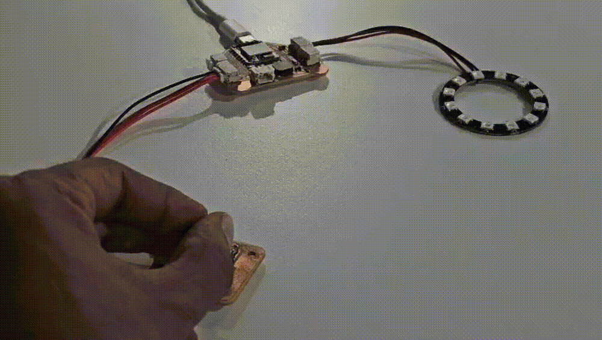
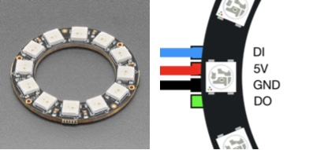
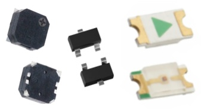
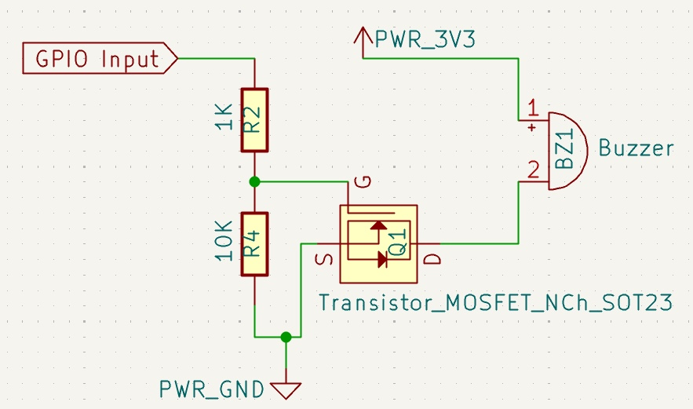
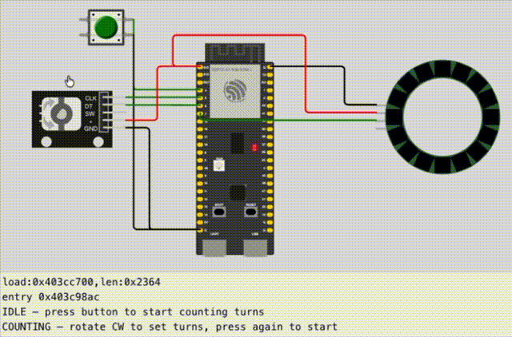
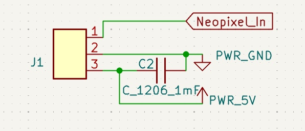

Output Devices — LED, NeoPixel Ring and Buzzer on the ESP32-C6 Test Board
This week focused on output devices — understanding how a microcontroller drives different types of outputs, and testing three outputs on the ESP32-C6 test board: a debug LED, a WS2812B NeoPixel ring, and a passive piezo buzzer.

NeoPixel Ring
The WS2812B is an integrated RGB LED with a built-in driver IC in each package. Each LED in the ring receives serialised 24-bit colour data (8 bits each for red, green, blue) over a single data line and passes the remaining data downstream to the next LED. This makes it possible to control any number of LEDs using just one GPIO pin.
The ring is driven using the Adafruit NeoPixel library:
#include <Adafruit_NeoPixel.h>
Adafruit_NeoPixel ring(12, 18, NEO_GRB + NEO_KHZ800);
ring.begin();
ring.setBrightness(80);
ring.setPixelColor(0, ring.Color(0, 210, 160)); // teal
ring.show();A 100µF decoupling capacitor is placed on the 5V rail close to the NeoPixel connector to absorb current spikes when multiple LEDs switch simultaneously, preventing voltage dips that could reset the microcontroller.

Other Output Devices
Buzzer
A buzzer is an audio signaling device used to emit alert beeps, chimes, alarms, or clicks. They fall into two main categories based on how they make sound (Piezoelectric vs. Magnetic) and two categories based on how they are powered (Active vs. Passive). I've used the CL8530A, a passive piezo buzzer requiring an external Pulse Width Modulation (PWM) square wave to vibrate its internal magnetic coil or piezoelectric element and generate sound. At 16Ω impedance, it draws up to 200mA, far exceeding the GPIO pin's 40mA limit. A MOSFET transistor (Q1, SOT-23) needs to be included as a switch between the GPIO and buzzer.
LED
A 1206 SMD LED is included for debugging purposes. It is a highly popular, surface-mount electronic component measuring 0.12 in × 0.06 in, and hence the designation 1206. The operating voltage depends on the colour of the LED. Shorter wavelengths of light (like blue) require higher energy gaps, which translates directly to higher operational voltage requirements.

Why Use a MOSFET
The ESP32-C6 GPIO pins can only supply 40mA, but the CL8530A buzzer draws up to 200mA. The MOSFET acts as an intermediary: it requires only a small gate current from the GPIO (milliamps) but can switch a large drain current (200mA+) through the buzzer. This protects the microcontroller from being overloaded while still delivering full power to the audio device.
In the countdown timer circuit, the MOSFET (Q1, SOT-23) functions as an amplifier between the GPIO pin and the buzzer. When the GPIO sends a HIGH signal to the gate, the transistor turns on, allowing current to flow from the drain to the source — completing the circuit and driving the buzzer. When the GPIO goes LOW, the transistor turns off, cutting the buzzer current.
Supporting resistors are included: R1 limits inrush current to the gate capacitance, and R4 (10kΩ) pulls the gate low during boot to prevent the buzzer from firing before the firmware initializes.

NeoPixel Countdown Animation
A Wowki simulation was created to test the countdown animation logic. The simulation file is attached in the Files section below.
The countdown animation displays elapsed time visually using the NeoPixel ring. The user first rotates the encoder clockwise in the COUNTING state to set a duration; each turn lights one LED on the ring (up to 12 LEDs for 12 turns). When the button is pressed, the RUNNING state begins the countdown: every 2 seconds, one LED dims out, giving a visual representation of time passing.
When all LEDs have dimmed out, the state transitions to ALARMING, and the ring flashes all 12 LEDs on and off every 150ms at full brightness (teal colour, RGB 0-210-160) until the button is pressed again to stop the alarm and reset to IDLE.
The animation uses non-blocking timing with millis() rather than delay(),
allowing the microcontroller to respond to the encoder and button at any time.

JST Pin Map
The NeoPixel ring connects to the test board via a JST PH connector. The pin mapping is as follows:
| JST Pin | Test Board | LED Ring |
|---|---|---|
| 1 | 5V | 5V |
| 2 | GND | GND |
| 3 | GPIO18 | Data_In |
Note: The Data_Out pin of the NeoPixel ring is not used in this design. Each LED in the ring is independently addressable through the single Data_In line, so chaining to additional rings is not implemented.
#include <Adafruit_NeoPixel.h>
// ── Pins ────────────────────────────────────────────────
#define PIN_LED 22
#define PIN_BUZZ 17
#define PIN_A 1 // EC11 CLK
#define PIN_B 2 // EC11 DT
#define PIN_NEOPIXEL 18
#define NUM_LEDS 12
Adafruit_NeoPixel ring(NUM_LEDS, PIN_NEOPIXEL, NEO_GRB + NEO_KHZ800);
// ── State machine ───────────────────────────────────────
enum State { IDLE, COUNTING, RUNNING, ALARMING };
State state = IDLE;
// ── Encoder ─────────────────────────────────────────────
int lastA = 0;
int count = 0;
int pending = 0;
unsigned long lastPulse = 0;
const unsigned long GAP = 1000;
// ── NeoPixel countdown ──────────────────────────────────
int lit = 0;
unsigned long lastDim = 0;
const unsigned long DIM_INTERVAL = 2000; // 10 seconds
// ── Buzzer alarm ────────────────────────────────────────
unsigned long alarmStart = 0;
const unsigned long TONE_DURATION = 1000; // buzzer plays for 1 second
// ── Helper: show N LEDs lit ─────────────────────────────
void showRing(int n) {
ring.clear();
for (int i = 0; i < n; i++) {
ring.setPixelColor(i, ring.Color(0, 210, 160)); // teal
}
ring.show();
}
void setup() {
Serial.begin(115200);
pinMode(PIN_LED, OUTPUT);
pinMode(PIN_BUZZ, OUTPUT);
pinMode(PIN_A, INPUT_PULLUP);
pinMode(PIN_B, INPUT_PULLUP);
ring.begin();
ring.setBrightness(80);
ring.clear();
ring.show();
lastA = digitalRead(PIN_A);
Serial.println("=== NeoPixel Countdown Timer Test ===");
Serial.println("1. Rotate encoder to set number of turns (1-12)");
Serial.println("2. Stop rotating — countdown will start automatically");
Serial.println("3. One LED dims every 10 seconds");
Serial.println("4. When all LEDs are dimmed, buzzer sounds for 1 second");
}
void loop() {
// ── Button / Encoder reading (if in IDLE or COUNTING state) ──
if (state == IDLE || state == COUNTING) {
int currentA = digitalRead(PIN_A);
if (currentA != lastA) {
int dir = (digitalRead(PIN_B) != currentA) ? 1 : -1;
if (dir == 1) {
pending = 1;
lastPulse = millis();
}
}
lastA = currentA;
// Commit the turn after GAP period
if (pending != 0 && millis() - lastPulse >= GAP) {
count += pending;
count = constrain(count, 0, NUM_LEDS); // clamp to 0-12
pending = 0;
// Update display
showRing(count);
digitalWrite(PIN_LED, HIGH);
delay(100);
digitalWrite(PIN_LED, LOW);
Serial.print("Turns set: ");
Serial.println(count);
state = COUNTING;
}
}
// ── If in COUNTING and no new input for 3 seconds, start countdown ──
if (state == COUNTING && millis() - lastPulse >= 2000) {
if (count > 0) {
lit = count;
state = RUNNING;
lastDim = millis();
Serial.print("Starting countdown with ");
Serial.print(lit);
Serial.println(" LEDs");
}
}
// ── Countdown timer (RUNNING state) ──────────────────────────
if (state == RUNNING && millis() - lastDim >= DIM_INTERVAL) {
lastDim = millis();
lit--;
showRing(lit);
if (lit > 0) {
Serial.print("LEDs remaining: ");
Serial.println(lit);
} else {
Serial.println("All LEDs dimmed — ALARM!");
state = ALARMING;
alarmStart = millis();
ring.clear();
ring.show();
tone(PIN_BUZZ, 2730, TONE_DURATION); // play for 1 second, then stop automatically
}
}
// ── Alarm: wait for buzzer duration, then reset ──────────────
if (state == ALARMING && millis() - alarmStart >= TONE_DURATION) {
// Flash all LEDs once
for (int i = 0; i < NUM_LEDS; i++) {
ring.setPixelColor(i, ring.Color(0, 210, 160)); // teal
}
ring.show();
delay(200);
ring.clear();
ring.show();
state = IDLE;
count = 0;
Serial.println("\nAlarm finished — back to IDLE");
Serial.println("Rotate encoder to start a new countdown");
}
}
Integrated Test — All Outputs Together
The final test ran all three outputs together using the countdown timer firmware state machine. The sequence steps through four states:
- IDLE — all outputs off, waiting for encoder input
- COUNTING — encoder active, NeoPixel shows number of turns set (1-12 LEDs)
- RUNNING — countdown active, one LED dims every 2 seconds
- ALARMING — all LEDs dimmed, buzzer sounds for 1 second
Running all three outputs simultaneously confirmed there were no power supply issues — the 100µF NeoPixel decoupling capacitor successfully prevented voltage dips during the countdown.